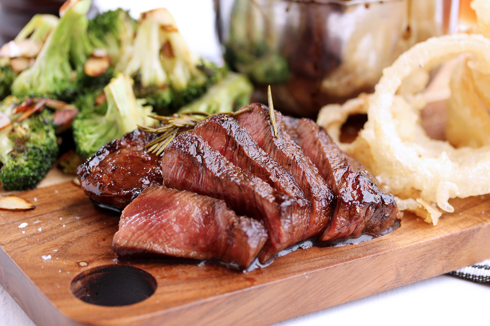

Whiskey Steak

Midwestern Whiskey Glazed Steak
Whiskey glazed steak is a trademark to the midwestern area. Perfect for those summer months where you are breaking the grill back out.
Whiskey Steak only requires a grill, some basic seasonings, your favorite beef and some whiskey and you are serving the whole family!
Ingredients
- Choice of cut beef. This recipe follows a sirloin cut.
- Salt and Pepper
- Vegetable oil
- Choice of steak seasonings
- Choice of Whiskey: We prefer WoodFord Reserve.
Steps
- Sit your steak out for a few minutes as you prepare the grill.
- Glaze the grates of your grill with a drizzle of vegetable oil and pre-heat the grill on medium-heat.
- Pat your steak dry with a napkin and let sit for 3 more mimutes.
- Pour out some Whiskey and with a brush or napkin rub your dryed steak until it is moist and coated on all sides.
- Now feel free to season steak with salt and Pepper and other seasonings you prefer.
- Immediately, place the steaks on the grill and close the lid. Let sit on a side for 5 minutes at a time.
- Peroidicaly check steaks until reaching your desired temperature.
- Remove from heat and let meat rest for 15 minutes
- Enjoy! Whiskey Steak is best served with of course a neat glass of whiskey or cool lemonade. Pair it with some classic country music and let the good times roll.